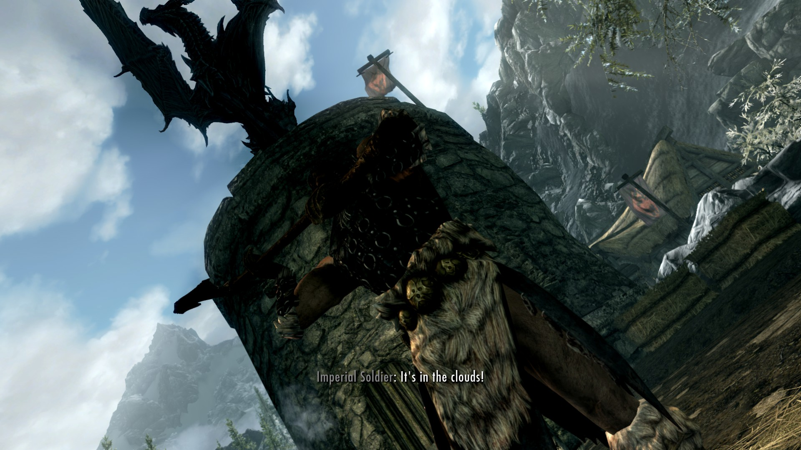
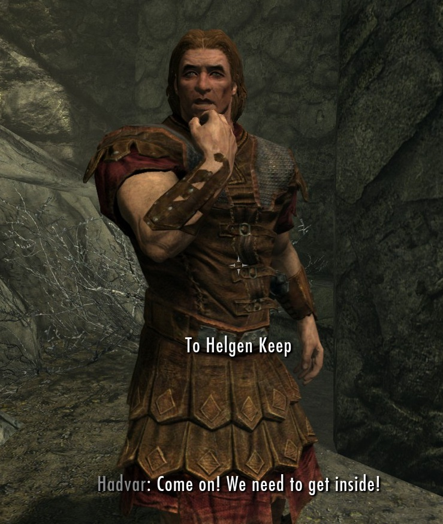
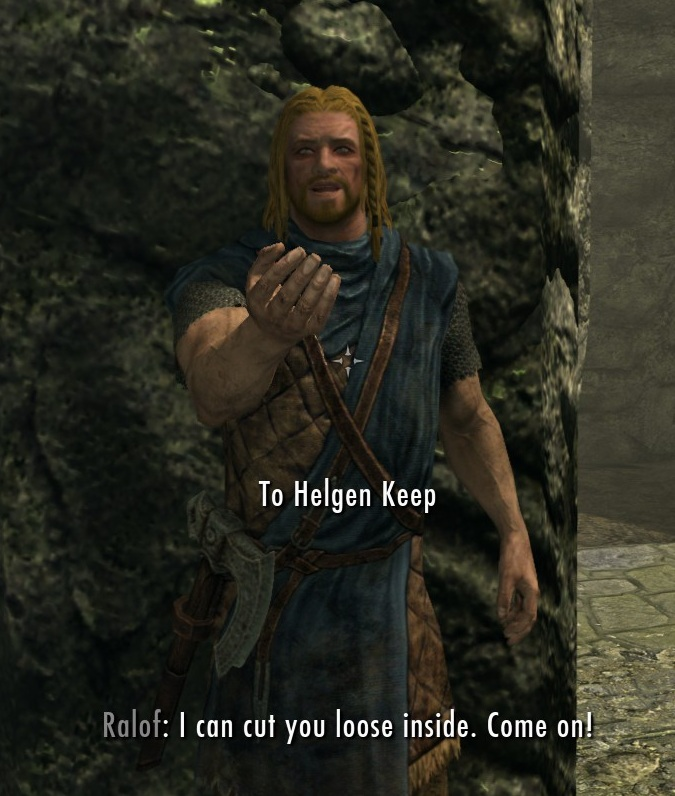
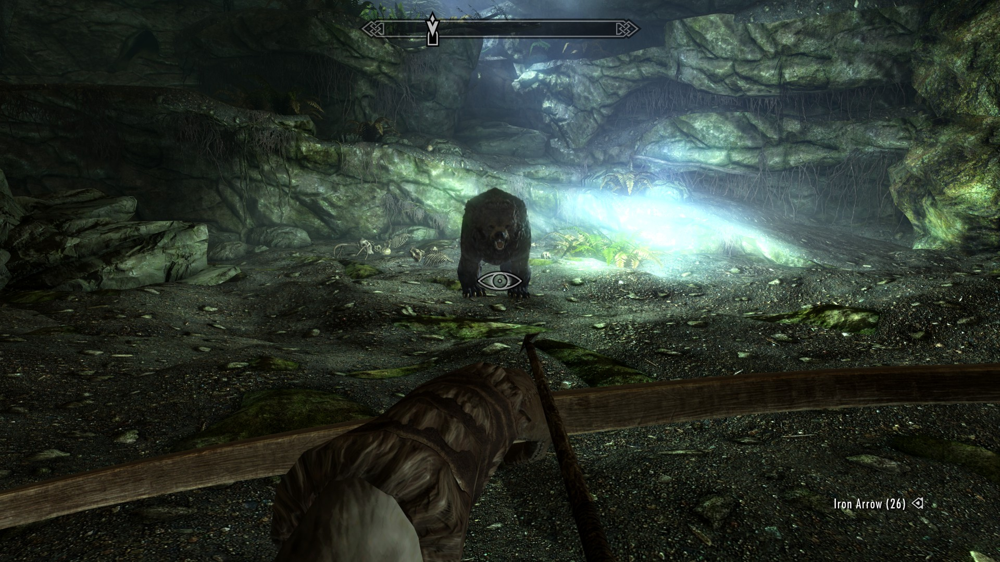

Skyrim-projekti
Tutoriaali: Helgen
Legends don't burn down villages
Aloitat pelin teloituksella ja just ennenku sun pää katkastaan niin tulee pahis!lohis-Alduin,
joka säikäyttää kaikki. Ensimmäinen tehtäväsi on paeta Helgenin kylästä Alduinin hyökkäyksestä.
Et voi kuolla tutoriaalissa, joten ei muuta kuin kohti vaaroja.

Ensin sun täytyy lähteä Ralofin perään, joka on tosiaan myöskin vankina ja olisi tullut teloitetuksi, jos Alduin ei olis keskeyttänyt sitä. Ralof on Stormcloakkien eli myrskyviittojen (lol) kannattaja.
Hetken päästä erkaannut Ralofista ja löydät Hadvarin, joka taas on Imperiaalien kannattaja. Pääset tekemään ensimmäisen valintasi, kun sun täytyy päättää lähdetkö suorittamaan tutoriaalia Ralofin vai Hadvarin kanssa. Henk koht shippaan näitä kahta ihan tosissaan, oon ihan satavarma että niillä on jotain sutinaa.


Tyrmään mars
Eli siinä kohtaa kun oot tehny sen päätöksen kumman matkaan lähdet, niin menet tyrmään. En muista miten Ralofin puoli menee koska Stormcloakit on pylleröstä (sorry not sorry), niin kerron, että jos valitset Hadvarin, niin sun täytyy kerää arkuista miekka ja joku huono armori ja sit siellä nurkkapöydällä on neljä kolikkoa mitkä kantsii kerää koska kolikot on elämän tarkoitus.
Tyrmässä kohtaat kaikenlaista jännää, kuten tyhmiä Stormcloakkeja ja kidutuskammion ja tosi pelottavan nallekarhun. Hadvar antaa sulle vaihtoehdon joko ampua sen nuolilla tai sniikata ohi, mutta oikeasti voit vaikka mäiskiä sitä paljailla nyrkeillä jos se sinua miellyttää. Nallekarhu on tutoriaalin viimeinen osio, sen jälkeen pääset vapauteen eli open worldiin sekoilemaan.

Tutoriaalin päätteeksi saat valita, oletko normaali vai sekopää siis haluatko pelata
tavallisesti vai otatko survival-moden, jolloin sun pitää syödä, nukkua ja saatat vaikka paleltua.
Hullujen hommaa semmonen.